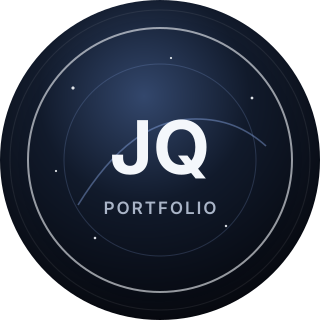

Cosmic Career Timeline
이준규
현실의 복잡한 문제를 시스템과 workflow로 바꾸는 개발자
물류와 제조 현장에서 시작해 운영 안정화, 데이터 흐름, AI Agent workflow까지 탐구하며 점진적으로 성장하고 있습니다.

Life & Career Timeline
타임라인 데이터가 여기에 표시됩니다.
About Me
복잡한 현실을 구조화하는 개발자
처음부터 AI/AX를 향해 곧장 달려온 것은 아닙니다. 물류와 제조 현장에서 입고, 출고, 재고, 생산, 검사 같은 현실의 복잡한 흐름을 시스템으로 구현하며 커리어를 시작했습니다.
그 과정에서 개발은 기능을 만드는 일만이 아니라, 업무의 흐름을 이해하고 데이터 구조로 정리하고 운영 가능한 기준을 남기는 일이라는 관점을 갖게 됐습니다.
이제는 그 경험을 바탕으로 AI Agent, MCP, SSE, 문서 기반 workflow를 연결하며 변화하는 개발 환경 속에서 다음 문제를 풀어가고 있습니다.
Selected Work
문제가 시스템이 된 순간들
각 프로젝트는 기술 스택보다 문제를 어떻게 바라봤고 어떤 구조로 바꿨는지를 중심으로 정리했습니다.
Developer Philosophy
제가 문제를 바라보는 방식
Tech Stack
기술은 문제를 설명하는 도구입니다
Closing
계속 탐구하며 점진적으로 성장합니다
변화하는 세상을 계속 탐구하고, 경험을 구조화하며, 다음 문제를 풀 수 있는 개발자로 점진적으로 성장하고 있습니다.